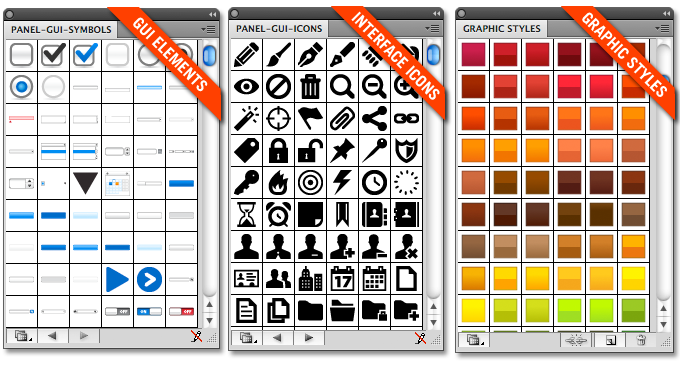
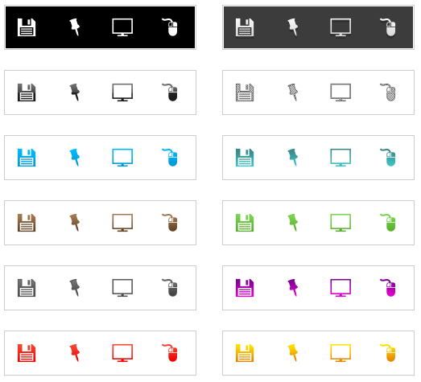

Иконки и элементы для разработчиков сайтов
Sancho / 24.09.2010, 15:36/00:41
Форум:
Если вы занимаетесь разработкой сайтов или интерфейсов к приложениям, то хорошим подспорьем будет библиотека пользовательского интерфейса от Webalys.
Эта свободно распространяемая библиотека содержит сотни иконок, стилей и элементов пользовательского интерфейса, которые можно использовать и изменять в ваших проектах.
Эта свободно распространяемая библиотека содержит сотни иконок, стилей и элементов пользовательского интерфейса, которые можно использовать и изменять в ваших проектах.

Они представлены как файлы Illustrator (версии CS2 и выше), которые можно открыть в панелях программы.
Получить более полную информацию и скачать библиотеку можно с этой страницы.
Сайт greepit также представляет набор из 100 бесплатных многоцелевых иконок для web-проектирования которые доступны в 12 различных цветах в PSD, PNG, JPG и GIF форматах.

Ссылка на скачивание набора находится в правом нижнем углу страницы.
© Copyright by Борис Кащеев, adobeindesign.ru
Запрещается копирование и публикация материала на других сайтах без письменного согласия автора.
No part of this story can be copied/pasted on any other website without the author's express written permission.